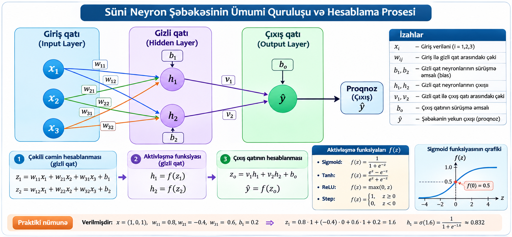

Fəslin məqsədi və təlim nəticələri
Bu fəslin məqsədi çoxqatlı süni neyron şəbəkəsinin quruluşunu, qatların funksiyalarını, parametrlərin riyazi mənasını və verilənlərin şəbəkədən keçmə mexanizmini dərindən izah etməkdir.
ANN, neuron, layer, weight, bias anlayışlarını izah edir.
Çəkili cəm, aktivləşmə, matris vurması və forward propagation hesablayır.
Giriş, gizli və çıxış qatlarını layihələndirir.
NumPy, Keras və PyTorch ilə MLP qurur.
12.1. Süni neyron şəbəkəsi anlayışı
Süni neyron şəbəkəsi (Artificial Neural Network — ANN) verilənlərdəki mürəkkəb əlaqələri öyrənmək üçün bir-biri ilə çəkili əlaqələr vasitəsilə birləşdirilmiş hesablama vahidlərindən — süni neyronlardan təşkil olunan hesablama modelidir. Şəbəkə giriş verilənlərini qəbul edir, onları qatlar üzrə emal edir və çıxışda proqnoz, sinif və ya başqa qiymət formalaşdırır.
Bioloji neyronlardan ilhamlansa da, süni neyron bioloji hüceyrənin tam surəti deyil. O, riyazi əməliyyatlar yerinə yetirən abstrakt modeldir. Əsas ideya çoxsaylı sadə hesablamaları birləşdirərək mürəkkəb funksiyanı yaxınlaşdırmaqdır.

Şəbəkənin əsas hissələri: giriş qatı, bir və ya bir neçə gizli qat, çıxış qatı, çəkilər, sürüşmə əmsalları (bias) və aktivləşmə funksiyalarıdır. Təlim zamanı çəkilər və bias qiymətləri elə yenilənir ki, şəbəkənin proqnozu hədəf qiymətə yaxınlaşsın.
Şəbəkəni məlumat emal edən sistem kimi düşünək
Şəbəkənin işi üç mərhələdə baş verir. Birinci mərhələdə giriş verilənləri eyni ölçülü ədədi vektora çevrilir. İkinci mərhələdə hər neyron əvvəlki qatın qiymətlərini çəkilərlə vurur, toplayır və bias əlavə edir. Üçüncü mərhələdə aktivləşmə funksiyası nəticəni dəyişdirərək növbəti qata ötürür. Çıxış qatında isə tapşırığa uyğun proqnoz alınır. Bu prosesin təkrarlanması modelin mürəkkəb münasibətləri ifadə etməsinə imkan verir.
Arxitektura, parametr və öyrənmə fərqi
Arxitektura qatların necə təşkil edildiyini, parametrlər çəkilər və bias qiymətlərini, öyrənmə isə bu parametrlərin verilənlərə əsasən optimallaşdırılmasını ifadə edir. Eyni arxitektura müxtəlif başlanğıc çəkiləri və təlim verilənləri ilə fərqli nəticələr verə bilər.
Burada x giriş vektoru, ŷ proqnoz, θ isə şəbəkənin öyrənilən parametrlər toplusudur. Arxitektura qatların sayını və hər qatda neyronların sayını, əlaqələrin tipini və aktivləşmə funksiyalarını müəyyən edir.
12.2. Süni neyron şəbəkələrinin yaranması və inkişafı
Süni neyron şəbəkələrinin inkişafı riyazi məntiq, hesablama nəzəriyyəsi, neyrofiziologiya və kompüter texnologiyalarının kəsişməsində formalaşıb. 1943-cü ildə McCulloch və Pitts neyronun məntiqi-riyazi modelini təklif etdilər. 1950-ci illərdə öyrənə bilən sadə modellər, 1980-ci illərdə çoxqatlı şəbəkələrin effektiv təlimi, 2000-ci illərdən sonra isə böyük verilənlər və GPU hesablamaları sahənin inkişafını sürətləndirdi.
İnkişaf xətti sadəcə tarixlərdən ibarət deyil: hər mərhələdə hesablama gücü, verilənlərin həcmi, optimallaşdırma üsulları və tətbiq tələbləri dəyişmişdir. Müasir arxitektura seçimi bu tarixi təcrübənin nəticəsidir.
12.3. Giriş qatı (Input Layer)
Giriş qatı verilənlərin şəbəkəyə daxil olduğu ilk mərhələdir. Bu qat adətən mürəkkəb öyrənmə hesablaması aparmır; giriş xüsusiyyətlərini (features) növbəti qata ötürür. Hər giriş neyronu bir xüsusiyyətə və ya əvvəlcədən müəyyən edilmiş giriş komponentinə uyğun gəlir.
Giriş ölçüsünün müəyyən edilməsi
Əgər dataset-də 5 xüsusiyyət varsa, tam əlaqəli şəbəkənin giriş ölçüsü 5 olur. Məsələn, tələbənin nəticəsini proqnozlaşdırmaq üçün davamiyyət, aralıq bal, laboratoriya balı, müstəqil iş balı və öyrənmə saatı istifadə edilirsə, giriş vektoru belədir:
| Xüsusiyyət | Simvol | Nümunə qiymət | Ölçü vahidi |
|---|---|---|---|
| Davamiyyət | x₁ | 0.90 | 0–1 |
| Aralıq imtahanı | x₂ | 78 | bal |
| Laboratoriya | x₃ | 85 | bal |
| Müstəqil iş | x₄ | 80 | bal |
| Öyrənmə saatı | x₅ | 6 | saat |
Bu xüsusiyyətlərin diapazonları fərqlidir. Buna görə çox vaxt standartlaşdırma və ya normallaşdırma tətbiq edilir. Bu əməliyyat şəbəkənin optimallaşdırılmasını asanlaşdıra bilər. Məsələn, davamiyyət 0–1 aralığında, imtahan balı 0–100 aralığında, öyrənmə saatı isə 0–15 aralığında ola bilər. Miqyası böyük olan sütun bəzi optimallaşdırma mərhələlərində gradientin istiqamətinə və addım ölçüsünə qeyri-mütənasib təsir göstərə bilər.
Giriş ölçüsü və tensor forması
Bir müşahidə üçün giriş forması (5,), 100 müşahidədən ibarət mini-batch üçün isə (100, 5) olur. Burada birinci ölçü müşahidələrin sayını, ikinci ölçü hər müşahidədəki xüsusiyyətlərin sayını göstərir. Keras-da Input(shape=(5,)) yazılışı bir müşahidənin 5 xüsusiyyət daşıdığını bildirir; batch ölçüsü adətən avtomatik idarə olunur.
Burada μᵢ xüsusiyyətin orta qiyməti, σᵢ standart kənarlaşmasıdır. Bu statistik göstəricilər yalnız təlim verilənlərindən hesablanmalı, sonra validation/test verilənlərinə tətbiq edilməlidir.
12.4. Gizli qatlar (Hidden Layers)
Gizli qatlar girişdən alınan məlumatı çəkili kombinasiyalar və qeyri-xətti aktivləşmə funksiyaları vasitəsilə emal edir. “Gizli” sözü bu qatların nəticələrinin adətən birbaşa istifadəçiyə göstərilməməsini bildirir; bu qatlar şəbəkənin daxili təqdimatlarını formalaşdırır.
Bir gizli qat sadə xüsusiyyət kombinasiyalarını, sonrakı qatlar isə həmin kombinasiyalardan daha mürəkkəb nümunələri öyrənə bilər. Məsələn, təsvir emalında ilkin qatlar kənar və tekstura kimi sadə nümunələrə, daha dərin qatlar obyekt hissələrinə və bütöv obyektlərə həssas ola bilər. Bu, ümumi izahdır; konkret şəbəkədə öyrənilən təqdimatlar verilənlərdən asılıdır.
Burada l qatın indeksidir; a⁽ˡ⁻¹⁾ əvvəlki qatın çıxışı, W⁽ˡ⁾ çəkilər matrisi, b⁽ˡ⁾ bias vektoru, φ aktivləşmə funksiyasıdır. Gizli qatların əsas gücü xətti olmayan əlaqələri modelləşdirməkdir.
Bir gizli neyronun hesablanması
Tutaq ki, iki giriş qiyməti x₁=2 və x₂=3, çəkilər w₁=0.4 və w₂=−0.2, bias b=0.1-dir. Neyron əvvəlcə z=2×0.4+3×(−0.2)+0.1=−0.1 hesablayır. ReLU seçilərsə a=max(0,−0.1)=0 alınır. Deməli, həmin neyron bu giriş kombinasiyası üçün növbəti qata sıfır aktivləşmə ötürür. Başqa giriş qiymətlərində nəticə fərqli ola bilər.
a = ReLU(z) = max(0, z) = 0
Gizli qatların sayı dərinliyi, hər qatdakı neyronların sayı isə eni müəyyən edir. Dərinlik artdıqca ardıcıl transformasiyaların sayı, en artdıqca hər mərhələdə paralel öyrənilən xüsusiyyət kombinasiyalarının sayı artır. Bu artımın faydası validation nəticələri ilə yoxlanmalıdır.
Bir qeyri-xətti transformasiya. Bəzi kompakt məsələlər üçün kifayət edə bilər.
Hiyerarxik xüsusiyyətlərin öyrənilməsi. Daha çox parametr və hesablama tələb edə bilər.
Eyni dərinlikdə neyron sayını artırır; yaddaş və overfitting riskini yüksəldə bilər.
12.5. Çıxış qatı (Output Layer)
Çıxış qatı məsələnin növünə uyğun proqnoz formalaşdırır. Çıxış neyronlarının sayı və aktivləşmə funksiyası hədəf dəyişənin quruluşundan asılıdır.
| Məsələ | Çıxış neyronu | Tipik aktivləşmə | Şərh |
|---|---|---|---|
| İkili təsnifat | 1 | Sigmoid | 0–1 aralığında ehtimal |
| Çoxsinifli təsnifat | K sinif | Softmax | Sinif ehtimalları cəmi 1 |
| Reqressiya | 1 və ya hədəf sayı | Linear | Davamlı qiymət |
| Çoxçıxışlı reqressiya | m | Adətən linear | m hədəf dəyişən |
Softmax çıxışları ehtimal kimi şərh edilir, lakin bu ehtimalların kalibrlənməsi ayrıca yoxlanmalıdır. Reqressiyada linear çıxış mənfi və müsbət qiymətlərə imkan verir; hədəf diapazonu məhdud olduqda başqa çıxış transformasiyası seçilə bilər.
12.6. Neyronlararası əlaqələr və çəkilər
Əlaqə bir neyronun çıxışının növbəti neyrona ötürülməsini təmin edir. Çəki (weight) ötürülən siqnalın təsirini miqyaslandırır. Müsbət çəki əlaqənin həmin giriş artdıqda cəmi artırdığını, mənfi çəki isə azaltdığını göstərir. Lakin çəkinin özü səbəb-nəticə əlaqəsi və ya müstəqil xüsusiyyət əhəmiyyəti kimi şərh edilməməlidir; digər çəkilər və verilənlərin miqyası da nəzərə alınmalıdır.
Burada xᵢ giriş, wᵢ uyğun çəki, b bias, z isə aktivləşmədən əvvəlki xətti birləşmədir. Bias girişlər sıfır olduqda belə neyronun aktivləşmə sərhədini tənzimləməyə imkan verir.
İnteraktiv çəkili cəm hesablayıcısı
Nümunə: z = 0.8×0.5 + 0.4×(−0.3) + 0.2 = 0.48. Dəyərləri dəyişərək hər girişin və çəkisinin yekun nəticəyə təsirini müşahidə edin.
Parametrlərin sayı
İki tam əlaqəli qat arasında n giriş və m çıxış neyronu olduqda, bias daxil parametrlərin sayı:
Çünki hər çıxış neyronunun n çəkisi və bir bias parametri var.
12.7. Birqatlı və çoxqatlı şəbəkələr
Birqatlı perseptron girişdən çıxışa bir hesablama qatına malikdir (giriş qatı adətən öyrənilən qat kimi sayılmır). O, xətti separasiya olunan məsələləri həll edə bilir. Çoxqatlı perseptron (MLP) isə bir və ya daha çox gizli qat əlavə etməklə qeyri-xətti qərar sərhədlərini öyrənə bilir.
Sadə və az parametrli; XOR kimi xətti ayrılmayan nümunələr üçün kifayət etmir.
Gizli qatlar qeyri-xətti transformasiyalar öyrənir; arxitektura daha çevikdir.
XOR nümunəsində girişlər (0,0), (0,1), (1,0), (1,1) üçün çıxışlar 0,1,1,0-dır. Bu nöqtələr bir düz xəttlə iki sinfə ayrıla bilmədiyindən tək xətti perseptron problemi həll edə bilmir. Gizli qat və qeyri-xətti aktivləşmə ilə MLP uyğun qərar sərhədi yarada bilər.
12.8. Feedforward Neural Network
Feedforward Neural Network (irəli istiqamətli neyron şəbəkəsi) məlumatın girişdən çıxışa doğru, dövrəvi geri əlaqə olmadan ötürüldüyü arxitekturadır. Hər qatın çıxışı növbəti qatın girişinə çevrilir. MLP bu ailənin geniş yayılmış nümunəsidir.
Feedforward arxitekturada iki anlayışı fərqləndirin: irəli yayılma proqnozun hesablanmasıdır; backpropagation isə xəta funksiyasının törəmələrini zəncir qaydası ilə geriyə hesablayaraq parametrlərin yenilənməsi üçün gradientləri tapır. Təlim dövründə bu iki proses optimizatorla birlikdə işləyir.
12.9. Şəbəkə arxitekturasının seçilməsi
Arxitektura seçimi məsələnin məqsədindən, verilənlərin ölçüsündən və strukturundan, hesablamanın mövcud resurslarından, gecikmə tələbindən və modelin izaholunma ehtiyacından asılıdır. Tabulyar verilənlərdə MLP faydalı başlanğıc ola bilər, lakin ağac əsaslı metodlar da güclü müqayisə bazasıdır. Təsvirlər üçün CNN, ardıcıl verilənlər üçün RNN/LSTM/Transformer tipli arxitekturalar nəzərdən keçirilə bilər.
| Verilən tipi | Namizəd arxitektura | Əsas fikir |
|---|---|---|
| Tabulyar | MLP | Feature vektoru qatlara ötürülür |
| Təsvir | CNN | Məkan qonşuluğu və lokal filtrlər |
| Zaman sırası | LSTM / Transformer | Ardıcıllıq və zaman asılılıqları |
| Mətn | Transformer | Diqqət mexanizmi ilə kontekst |
Seçim üçün qərar ardıcıllığı
- Problemi təsnifat, reqressiya və ya başqa tapşırıq kimi müəyyən edin.
- Verilənlərin formasını və ölçüsünü araşdırın.
- Sadə baseline model qurun.
- Validation nəticələrinə əsasən arxitekturanı dəyişin.
- Parametr sayı, hesablama vaxtı və ümumiləşdirmə keyfiyyətini birlikdə qiymətləndirin.
- Son test dəstini yalnız yekun qiymətləndirmə üçün saxlayın.
12.10. Neyron sayının və qatların müəyyənləşdirilməsi
Gizli qatların və neyronların sayı üçün bütün məsələlərə uyğun universal düstur yoxdur. Bu hiperparametrlər validation nəticələri, hesablama büdcəsi və modelin davranışı əsasında seçilir. Kiçik modeldən başlayaraq tədricən genişləndirmək praktik strategiyadır.
İnteraktiv arxitektura qurucusu
İki gizli qatlı tam əlaqəli şəbəkə üçün parametr sayı qat-qat hesablanır. Məsələn, 4→6→4→2 arxitekturasında:
Bu say öyrənilən çəkilər və bias-ları əhatə edir. Aktivləşmə funksiyasının özündə öyrənilən parametr yoxdursa, o, parametr sayına daxil edilmir.
Hesablamanın mənası
4→6 keçidində 4 girişin hər biri 6 neyronun hər biri ilə əlaqələndirilir: 4×6=24 çəki yaranır. Hər 6 neyronun ayrıca bir bias-ı olduğundan 6 parametr də əlavə edilir. Beləliklə, həmin qat 30 parametrə malikdir. Növbəti qat üçün eyni qayda tətbiq edilir. Bu hesab modelin yaddaş tələbatını təxmin etməyə kömək edir.
Parametr sayının çox olması modelin mütləq daha keyfiyyətli olacağı demək deyil. Parametrlərin sayı təlim nümunələrinin sayına nisbətən həddən artıq böyük olduqda overfitting riski yüksələ bilər. Bununla belə, risk yalnız parametr sayından deyil, verilənlərin müxtəlifliyindən, regularization-dan və təlim strategiyasından da asılıdır.
12.11. Forward Propagation
Forward Propagation (irəli yayılma) giriş verilənlərinin şəbəkə qatlarından ardıcıl keçirilməsi və çıxış proqnozunun hesablanması prosesidir. Hər qatda əvvəlcə xətti kombinasiya, sonra aktivləşmə funksiyası tətbiq olunur.
z⁽¹⁾ = W⁽¹⁾a⁽⁰⁾ + b⁽¹⁾ a⁽¹⁾ = φ(z⁽¹⁾)
z⁽²⁾ = W⁽²⁾a⁽¹⁾ + b⁽²⁾ a⁽²⁾ = φ(z⁽²⁾)
ŷ = g(W⁽ᴸ⁾a⁽ᴸ⁻¹⁾ + b⁽ᴸ⁾)
Burada g çıxış qatının aktivləşməsidir. Vektor-matris yazılışı çoxsaylı neyronların hesablamasını kompakt şəkildə ifadə edir.
Forward propagation zamanı ölçülərin uyğunluğu
Əgər əvvəlki qatın çıxışı 1×n ölçülü sətir vektoru, növbəti qatda m neyron varsa, çəkilər matrisi n×m, bias vektoru isə m ölçülü olur. Vurma nəticəsi 1×m ölçülü vektor verir. Bu ölçü uyğunluğu proqramlaşdırmada ən çox rast gəlinən səhvləri aşkar etməyə kömək edir.
| Obyekt | Ölçü | Məzmun |
|---|---|---|
| a⁽ˡ⁻¹⁾ | 1×n | Əvvəlki qatın çıxışı |
| W⁽ˡ⁾ | n×m | Əlaqələrin çəkiləri |
| b⁽ˡ⁾ | 1×m | Hər neyron üçün bias |
| z⁽ˡ⁾ | 1×m | Aktivləşmədən əvvəlki qiymətlər |
| a⁽ˡ⁾ | 1×m | Aktivləşmədən sonrakı çıxış |
İki girişli, iki neyronlu gizli qat nümunəsi
Giriş x=[1,2]ᵀ, çəkilər matrisi W=[[0.5,−0.2],[0.3,0.8]], bias b=[0.1,−0.1]ᵀ olsun. Onda:
z₂ = 0.3×1 + 0.8×2 − 0.1 = 1.8
ReLU tətbiq etdikdə a=[max(0,0.2), max(0,1.8)]ᵀ=[0.2,1.8]ᵀ alınır. Sonrakı qat bu vektoru yeni çəkilər və bias ilə emal edir.
İnteraktiv ReLU/Sigmoid hesablayıcısı
Aktivləşmə funksiyası olmadan ardıcıl xətti qatların kompozisiyası yenə xətti funksiyadır. Buna görə gizli qatlarda qeyri-xətti aktivləşmə şəbəkənin qeyri-xətti əlaqələri öyrənməsi üçün vacibdir.
12.12. Süni neyron şəbəkəsinin Python ilə qurulması
Aşağıdakı nümunə NumPy ilə iki girişli və bir gizli qatlı kiçik MLP-nin irəli yayılmasını sıfırdan göstərir. Məqsəd kitabxana çağırışından əvvəl matris əməliyyatlarının məntiqini anlamaqdır. Nümunə təlim prosesi deyil; yalnız forward pass hesablayır.
İzah: X matrisində sətirlər müşahidələri, sütunlar xüsusiyyətləri göstərir. X@W1 əməliyyatı bütün müşahidələri paralel emal edir. Bias NumPy broadcasting vasitəsilə hər müşahidəyə əlavə edilir. ReLU mənfi qiymətləri sıfıra çevirir. İkinci matris vurması çıxış qiymətini hesablayır.
Öyrədilə bilən MLP nümunəsi — scikit-learn
Pipeline standartlaşdırmanı yalnız təlim dəstində öyrənir və testə eyni transformasiyanı tətbiq edir. Bu yanaşma data leakage riskini azaldır. Real tədqiqatda accuracy ilə kifayətlənməyin; precision, recall, F1, ROC-AUC, confusion matrix və sinif balansını da araşdırın.
Model nəticəsini necə şərh etməli?
Accuracy yüksək olsa da, siniflər qeyri-balanslıdırsa, azsaylı sinifin nümunələri düzgün aşkarlanmaya bilər. Buna görə confusion matrix-də yanlış müsbət (FP) və yanlış mənfi (FN) nəticələri ayrıca araşdırın. Xüsusilə riskli qərar sistemlərində recall və precision arasındakı kompromis tətbiqin məqsədinə uyğun seçilməlidir.
12.13. TensorFlow/Keras və PyTorch-da şəbəkə yaradılması
TensorFlow/Keras
Keras yüksək səviyyəli API təqdim edir. Sequential modeli qatların ardıcıl yığılması üçün rahatdır. Aşağıdakı nümunə ikili təsnifat üçündür: gizli qatlarda ReLU, çıxışda sigmoid, itki funksiyası kimi binary cross-entropy istifadə olunur.
PyTorch
PyTorch-da model adətən nn.Module sinfindən törədilir. Qatların irəli hesablanması forward metodunda yazılır. PyTorch nümunəsində təlim dövrü daha açıq göstərildiyi üçün hər addımın məqsədini anlamaq vacibdir: zero_grad() əvvəlki batch-dən qalan gradientləri təmizləyir, backward() cari itkiyə görə gradientləri hesablayır, step() isə optimizator vasitəsilə parametrləri yeniləyir.
Framework-lər üzrə ümumi təlim dövrü
Hər iki kitabxanada əsas məntiq eynidir: batch verilənləri modelə ötürülür, proqnoz alınır, loss hesablanır, gradient tapılır və parametrlər yenilənir. Fərq daha çox API-nin quruluşunda və təlim dövrünün nə qədərinin avtomatlaşdırılmasındadır.
| Meyar | TensorFlow/Keras | PyTorch |
|---|---|---|
| Model qurulması | Sequential / Functional / Subclassing | nn.Module |
| Təlim addımları | compile və fit ilə qısa | Training loop daha açıq idarə olunur |
| Uyğun istifadə | Sürətli prototipləşdirmə və tətbiq | Çevik tədqiqat və xüsusi təlim dövrü |
Praktiki tapşırıqlar
5 giriş xüsusiyyəti, 8 neyronlu bir gizli qat və 1 çıxış neyronu olan tam əlaqəli şəbəkə qurun. Öyrənilən parametr sayını hesablayın və hər qatın ölçüsünü göstərin.
UCI və ya scikit-learn dataset-i seçərək 2 gizli qatlı MLPClassifier qurun. Standartlaşdırma, stratified train/test bölgüsü və ən azı dörd qiymətləndirmə metrikası tətbiq edin. Gizli qat ölçülərini (16), (32,16), (64,32) variantlarında müqayisə edin.
Eyni dataset üçün Keras və PyTorch MLP modelləri qurun. Parametr sayını, təlim vaxtını, validation nəticələrini və test metrikalarını müqayisə edin. Random seed, eyni data bölgüsü və eyni ilkin emal addımlarını qoruyun. Nəticələrin fərqlənməsinə təsir edən səbəbləri müzakirə edin.
Özünü yoxlama sualları
Hər suala cavab verin, sonra “Nəticəni yoxla” düyməsi ilə balınızı və izahları görün.
İstifadə olunan ədəbiyyat
- R. R. Əliyev (2026). Süni intellekt. Azərnəşr. Nəşr məlumatı.
- G. Abdullayeva, Ü. Əlizadə (2026). Süni intellekt və təsvirlərin tanınması: nəzəri və praktiki əsaslar. Elm. Prezident Kitabxanası.
- K. R. Əliyeva (2024). Süni intellekt. ADNSU. Prezident Kitabxanası.
- N. T. İsmayılova (2023). Süni intellekt: maşın öyrənmə üsulları. Book Print. Prezident Kitabxanası.
- Alpaydin, E. (2021). Machine Learning: The New AI. MIT Press. MIT Press.
- Chollet, F. (2021). Deep Learning with Python, 2nd ed. Manning. Manning.
- Géron, A. (2022). Hands-On Machine Learning with Scikit-Learn, Keras, and TensorFlow, 3rd ed. O’Reilly. O’Reilly.
- Goodfellow, I., Bengio, Y., Courville, A. (2016). Deep Learning. MIT Press. Açıq kitab. (Nəzəri baza üçün fundamental mənbə.)
- TensorFlow Keras guide: Sequential model.
- PyTorch tutorials: Official tutorials.
- Scikit-learn: Multi-layer Perceptron.
Çoxqatlı süni neyron şəbəkəsinin qurulması və verilənlər üzərində öyrədilməsi
1. İşin məqsədi
Çoxqatlı süni neyron şəbəkəsinin arxitekturasını qurmaq, verilənləri hazırlamaq, modeli öyrətmək və test nəticələrini metrikalarla qiymətləndirmək.
2. Nəzəri məlumat
Laboratoriyada Breast Cancer Wisconsin dataset-i istifadə olunur. Dataset tədris məqsədlidir; modelin nəticələri tibbi diaqnoz və ya klinik qərar üçün istifadə edilməməlidir. Dataset-də 30 ədədi xüsusiyyət və iki sinif mövcuddur.
3. İstifadə olunan vasitələr
- Python 3.10+
- Google Colab və ya Jupyter Notebook
- NumPy, Pandas, Matplotlib, Scikit-learn
- İstəyə görə TensorFlow/Keras və ya PyTorch
4. İcra mərhələləri
- Dataset-i yükləyin və ölçüsünü yoxlayın.
- Sinif paylanmasını və xüsusiyyətləri araşdırın.
- Train/test bölgüsünü stratify ilə aparın.
- StandardScaler və MLP modelini Pipeline daxilində qurun.
- Modeli öyrədin və test dəstində proqnoz alın.
- Confusion matrix, precision, recall, F1 və ROC-AUC hesablayın.
- Fərqli gizli qat ölçülərini müqayisə edin.
5. Laboratoriya kodu
6. Nəticələrin təhlili
Cədvəldəki metrikaları müqayisə edin. Accuracy ümumi düzgün təsnifat payını göstərir; precision müsbət proqnozların nə qədərinin düzgün olduğunu, recall real müsbət nümunələrin nə qədərinin tapıldığını, F1 isə precision və recall arasında harmonik orta göstəricini verir. ROC-AUC modelin müxtəlif hədlərdə sinifləri ayırma qabiliyyətini qiymətləndirir.
7. Hesabatın strukturu
- Laboratoriya işinin adı və məqsədi
- Dataset haqqında məlumat və ilkin təhlil
- Seçilmiş şəbəkə arxitekturası və parametr sayı
- İstifadə olunan kod və izah
- Qiymətləndirmə nəticələri və confusion matrix
- Arxitekturaların müqayisəsi
- Nəticə və təkliflər
8. Yoxlama sualları
- Giriş neyronlarının sayı necə müəyyən edilir?
- Gizli qatın əsas funksiyası nədir?
- Bias parametrinin rolu nədir?
- Forward propagation və backpropagation arasında fərq nədir?
- Çoxsinifli təsnifatda Softmax nə üçün istifadə olunur?
- Standartlaşdırmanı niyə Pipeline daxilində tətbiq etdik?
- Arxitekturanın genişləndirilməsi hansı riskləri yarada bilər?